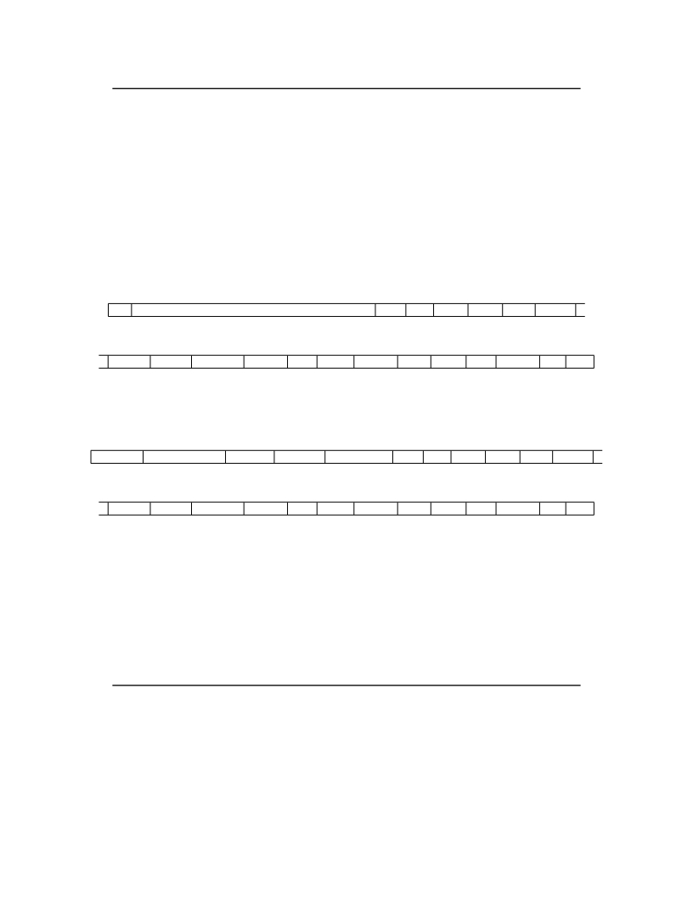

<table border="0" height="1453" width="1123">
<tr><td>
<div style="position:absolute; top:0; left:0;"></div>
<div style="position:absolute;top:74.119;left:132.145;"><nobr>
<span style="font-size:20.022;">20</span>
</nobr></div>
<div style="position:absolute;top:74.119;left:331.141;"><nobr>
<span style="font-size:20.022;font-style:italic;">Volume II: RISC-V Privileged Architectures V20190608-Priv-MSU-Ratified</span>
</nobr></div>
<div style="position:absolute;top:153.720;left:182.201;"><nobr>
<span style="font-size:18.285;font-style:italic;">In certain cases, we must ensure exactly one hart runs some code (e.g., at reset), and so require</span>
</nobr></div>
<div style="position:absolute;top:175.661;left:182.201;"><nobr>
<span style="font-size:18.285;font-style:italic;">one hart to have a known hart ID of zero.</span>
</nobr></div>
<div style="position:absolute;top:197.603;left:212.233;"><nobr>
<span style="font-size:18.285;font-style:italic;">For efficiency, system implementers should aim to reduce the magnitude of the largest hart</span>
</nobr></div>
<div style="position:absolute;top:219.545;left:182.201;"><nobr>
<span style="font-size:18.285;font-style:italic;">ID used in a system.</span>
</nobr></div>
<div style="position:absolute;top:280.693;left:132.145;"><nobr>
<span style="font-size:21.942;font-weight:bold;">3.1.6</span>
</nobr></div>
<div style="position:absolute;top:280.693;left:207.516;"><nobr>
<span style="font-size:21.942;font-weight:bold;">Machine Status Register (</span>
<span style="font-size:21.942;">mstatus</span>
<span style="font-size:21.942;font-weight:bold;">)</span>
</nobr></div>
<div style="position:absolute;top:338.108;left:132.145;"><nobr>
<span style="font-size:20.022;">The mstatus register is an MXLEN-bit read/write register formatted as shown in Figure</span>
<span style="font-size:20.022;color: #000080;"><a href="#" onClick="javascript:parent.GotoNewPage(31); return false">3.6</a></span>
<span style="font-size:20.022;">for</span>
</nobr></div>
<div style="position:absolute;top:362.976;left:132.145;"><nobr>
<span style="font-size:20.022;">RV32 and Figure</span>
<span style="font-size:20.022;color: #000080;"><a href="#" onClick="javascript:parent.GotoNewPage(31); return false">3.7</a></span>
<span style="font-size:20.022;">for RV64. The mstatus register keeps track of and controls the hart’s current</span>
</nobr></div>
<div style="position:absolute;top:387.845;left:132.145;"><nobr>
<span style="font-size:20.022;">operating state. Restricted views of the mstatus register appear as the sstatus and ustatus</span>
</nobr></div>
<div style="position:absolute;top:412.712;left:132.145;"><nobr>
<span style="font-size:20.022;">registers in the S-level and U-level ISAs respectively.</span>
</nobr></div>
<div style="position:absolute;top:475.409;left:186.585;"><nobr>
<span style="font-size:14.628;">31</span>
</nobr></div>
<div style="position:absolute;top:475.409;left:226.505;"><nobr>
<span style="font-size:14.628;">30</span>
</nobr></div>
<div style="position:absolute;top:475.409;left:585.884;"><nobr>
<span style="font-size:14.628;">23</span>
</nobr></div>
<div style="position:absolute;top:475.409;left:625.672;"><nobr>
<span style="font-size:14.628;">22</span>
</nobr></div>
<div style="position:absolute;top:475.409;left:672.862;"><nobr>
<span style="font-size:14.628;">21</span>
</nobr></div>
<div style="position:absolute;top:475.409;left:723.211;"><nobr>
<span style="font-size:14.628;">20</span>
</nobr></div>
<div style="position:absolute;top:475.409;left:779.075;"><nobr>
<span style="font-size:14.628;">19</span>
</nobr></div>
<div style="position:absolute;top:475.409;left:833.535;"><nobr>
<span style="font-size:14.628;">18</span>
</nobr></div>
<div style="position:absolute;top:475.409;left:892.807;"><nobr>
<span style="font-size:14.628;">17</span>
</nobr></div>
<div style="position:absolute;top:494.985;left:183.199;"><nobr>
<span style="font-size:16.456;">SD</span>
</nobr></div>
<div style="position:absolute;top:515.829;left:190.128;"><nobr>
<span style="font-size:16.456;">1</span>
</nobr></div>
<div style="position:absolute;top:494.985;left:383.128;"><nobr>
<span style="font-size:16.456;font-weight:bold;">WPRI</span>
</nobr></div>
<div style="position:absolute;top:515.829;left:406.925;"><nobr>
<span style="font-size:16.456;">8</span>
</nobr></div>
<div style="position:absolute;top:494.985;left:616.079;"><nobr>
<span style="font-size:16.456;">TSR TW TVM MXR SUM MPRV</span>
</nobr></div>
<div style="position:absolute;top:515.829;left:629.219;"><nobr>
<span style="font-size:16.456;">1 1 1 1 1 1</span>
</nobr></div>
<div style="position:absolute;top:559.154;left:189.390;"><nobr>
<span style="font-size:14.628;">16 15</span>
</nobr></div>
<div style="position:absolute;top:559.154;left:257.951;"><nobr>
<span style="font-size:14.628;">14 13</span>
</nobr></div>
<div style="position:absolute;top:559.154;left:329.262;"><nobr>
<span style="font-size:14.628;">12</span>
</nobr></div>
<div style="position:absolute;top:559.154;left:361.560;"><nobr>
<span style="font-size:14.628;">11</span>
</nobr></div>
<div style="position:absolute;top:559.154;left:412.524;"><nobr>
<span style="font-size:14.628;">10 9</span>
</nobr></div>
<div style="position:absolute;top:559.154;left:486.293;"><nobr>
<span style="font-size:14.628;">8</span>
</nobr></div>
<div style="position:absolute;top:559.154;left:540.182;"><nobr>
<span style="font-size:14.628;">7</span>
</nobr></div>
<div style="position:absolute;top:559.154;left:605.510;"><nobr>
<span style="font-size:14.628;">6</span>
</nobr></div>
<div style="position:absolute;top:559.154;left:667.796;"><nobr>
<span style="font-size:14.628;">5</span>
</nobr></div>
<div style="position:absolute;top:559.154;left:723.309;"><nobr>
<span style="font-size:14.628;">4</span>
</nobr></div>
<div style="position:absolute;top:559.154;left:776.130;"><nobr>
<span style="font-size:14.628;">3</span>
</nobr></div>
<div style="position:absolute;top:559.154;left:835.710;"><nobr>
<span style="font-size:14.628;">2</span>
</nobr></div>
<div style="position:absolute;top:559.154;left:892.232;"><nobr>
<span style="font-size:14.628;">1</span>
</nobr></div>
<div style="position:absolute;top:559.154;left:936.248;"><nobr>
<span style="font-size:14.628;">0</span>
</nobr></div>
<div style="position:absolute;top:578.731;left:182.847;"><nobr>
<span style="font-size:16.456;text-decoration:underline;">XS[1:0] FS[1:0] MPP[1:0]</span>
<span></span>
<span style="font-size:16.456;font-weight:bold;text-decoration:underline;">WPRI</span>
<span></span>
<span style="font-size:16.456;text-decoration:underline;">SPP MPIE</span>
<span></span>
<span style="font-size:16.456;font-weight:bold;text-decoration:underline;">WPRI</span>
<span></span>
<span style="font-size:16.456;text-decoration:underline;">SPIE UPIE MIE</span>
<span></span>
<span style="font-size:16.456;font-weight:bold;text-decoration:underline;">WPRI</span>
<span></span>
<span style="font-size:16.456;text-decoration:underline;">SIE UIE</span>
<span></span>
</nobr></div>
<div style="position:absolute;top:599.575;left:205.161;"><nobr>
<span style="font-size:16.456;">2 2 2 2 1 1 1 1 1 1 1 1 1</span>
</nobr></div>
<div style="position:absolute;top:646.990;left:287.900;"><nobr>
<span style="font-size:20.022;">Figure 3.6: Machine-mode status register ( mstatus ) for RV32.</span>
</nobr></div>
<div style="position:absolute;top:713.384;left:154.263;"><nobr>
<span style="font-size:14.628;">MXLEN-1</span>
</nobr></div>
<div style="position:absolute;top:713.384;left:245.205;"><nobr>
<span style="font-size:14.628;">MXLEN-2</span>
</nobr></div>
<div style="position:absolute;top:713.384;left:342.905;"><nobr>
<span style="font-size:14.628;">36</span>
</nobr></div>
<div style="position:absolute;top:713.384;left:382.795;"><nobr>
<span style="font-size:14.628;">35 34</span>
</nobr></div>
<div style="position:absolute;top:713.384;left:462.620;"><nobr>
<span style="font-size:14.628;">33</span>
</nobr></div>
<div style="position:absolute;top:713.384;left:493.631;"><nobr>
<span style="font-size:14.628;">32</span>
</nobr></div>
<div style="position:absolute;top:713.384;left:539.987;"><nobr>
<span style="font-size:14.628;">31</span>
</nobr></div>
<div style="position:absolute;top:713.384;left:613.931;"><nobr>
<span style="font-size:14.628;">23</span>
</nobr></div>
<div style="position:absolute;top:713.384;left:653.719;"><nobr>
<span style="font-size:14.628;">22</span>
</nobr></div>
<div style="position:absolute;top:713.384;left:700.908;"><nobr>
<span style="font-size:14.628;">21</span>
</nobr></div>
<div style="position:absolute;top:713.384;left:751.243;"><nobr>
<span style="font-size:14.628;">20</span>
</nobr></div>
<div style="position:absolute;top:713.384;left:807.122;"><nobr>
<span style="font-size:14.628;">19</span>
</nobr></div>
<div style="position:absolute;top:713.384;left:861.567;"><nobr>
<span style="font-size:14.628;">18</span>
</nobr></div>
<div style="position:absolute;top:713.384;left:920.839;"><nobr>
<span style="font-size:14.628;">17</span>
</nobr></div>
<div style="position:absolute;top:732.959;left:178.477;"><nobr>
<span style="font-size:16.456;">SD</span>
</nobr></div>
<div style="position:absolute;top:753.805;left:185.407;"><nobr>
<span style="font-size:16.456;">1</span>
</nobr></div>
<div style="position:absolute;top:732.959;left:271.067;"><nobr>
<span style="font-size:16.456;font-weight:bold;">WPRI</span>
</nobr></div>
<div style="position:absolute;top:753.805;left:256.335;"><nobr>
<span style="font-size:16.456;">MXLEN-37</span>
</nobr></div>
<div style="position:absolute;top:732.959;left:373.193;"><nobr>
<span style="font-size:16.456;">SXL[1:0] UXL[1:0]</span>
</nobr></div>
<div style="position:absolute;top:753.805;left:401.069;"><nobr>
<span style="font-size:16.456;">2 2</span>
</nobr></div>
<div style="position:absolute;top:732.959;left:554.048;"><nobr>
<span style="font-size:16.456;font-weight:bold;">WPRI</span>
</nobr></div>
<div style="position:absolute;top:753.805;left:577.730;"><nobr>
<span style="font-size:16.456;">9</span>
</nobr></div>
<div style="position:absolute;top:732.959;left:644.283;"><nobr>
<span style="font-size:16.456;">TSR TW TVM MXR SUM MPRV</span>
</nobr></div>
<div style="position:absolute;top:753.805;left:657.313;"><nobr>
<span style="font-size:16.456;">1 1 1 1 1 1</span>
</nobr></div>
<div style="position:absolute;top:797.129;left:189.390;"><nobr>
<span style="font-size:14.628;">16 15</span>
</nobr></div>
<div style="position:absolute;top:797.129;left:257.951;"><nobr>
<span style="font-size:14.628;">14 13</span>
</nobr></div>
<div style="position:absolute;top:797.129;left:329.262;"><nobr>
<span style="font-size:14.628;">12</span>
</nobr></div>
<div style="position:absolute;top:797.129;left:361.560;"><nobr>
<span style="font-size:14.628;">11</span>
</nobr></div>
<div style="position:absolute;top:797.129;left:412.524;"><nobr>
<span style="font-size:14.628;">10 9</span>
</nobr></div>
<div style="position:absolute;top:797.129;left:486.293;"><nobr>
<span style="font-size:14.628;">8</span>
</nobr></div>
<div style="position:absolute;top:797.129;left:540.182;"><nobr>
<span style="font-size:14.628;">7</span>
</nobr></div>
<div style="position:absolute;top:797.129;left:605.510;"><nobr>
<span style="font-size:14.628;">6</span>
</nobr></div>
<div style="position:absolute;top:797.129;left:667.796;"><nobr>
<span style="font-size:14.628;">5</span>
</nobr></div>
<div style="position:absolute;top:797.129;left:723.309;"><nobr>
<span style="font-size:14.628;">4</span>
</nobr></div>
<div style="position:absolute;top:797.129;left:776.130;"><nobr>
<span style="font-size:14.628;">3</span>
</nobr></div>
<div style="position:absolute;top:797.129;left:835.710;"><nobr>
<span style="font-size:14.628;">2</span>
</nobr></div>
<div style="position:absolute;top:797.129;left:892.232;"><nobr>
<span style="font-size:14.628;">1</span>
</nobr></div>
<div style="position:absolute;top:797.129;left:936.248;"><nobr>
<span style="font-size:14.628;">0</span>
</nobr></div>
<div style="position:absolute;top:816.704;left:182.847;"><nobr>
<span style="font-size:16.456;text-decoration:underline;">XS[1:0] FS[1:0] MPP[1:0]</span>
<span></span>
<span style="font-size:16.456;font-weight:bold;text-decoration:underline;">WPRI</span>
<span></span>
<span style="font-size:16.456;text-decoration:underline;">SPP MPIE</span>
<span></span>
<span style="font-size:16.456;font-weight:bold;text-decoration:underline;">WPRI</span>
<span></span>
<span style="font-size:16.456;text-decoration:underline;">SPIE UPIE MIE</span>
<span></span>
<span style="font-size:16.456;font-weight:bold;text-decoration:underline;">WPRI</span>
<span></span>
<span style="font-size:16.456;text-decoration:underline;">SIE UIE</span>
<span></span>
</nobr></div>
<div style="position:absolute;top:837.550;left:205.161;"><nobr>
<span style="font-size:16.456;">2 2 2 2 1 1 1 1 1 1 1 1 1</span>
</nobr></div>
<div style="position:absolute;top:884.966;left:287.900;"><nobr>
<span style="font-size:20.022;">Figure 3.7: Machine-mode status register ( mstatus ) for RV64.</span>
</nobr></div>
<div style="position:absolute;top:959.323;left:132.145;"><nobr>
<span style="font-size:20.022;font-weight:bold;">3.1.6.1</span>
</nobr></div>
<div style="position:absolute;top:959.323;left:220.382;"><nobr>
<span style="font-size:20.022;font-weight:bold;">Privilege and Global Interrupt-Enable Stack in</span>
<span style="font-size:20.022;">mstatus</span>
<span style="font-size:20.022;font-weight:bold;">register</span>
</nobr></div>
<div style="position:absolute;top:1015.408;left:132.145;"><nobr>
<span style="font-size:20.022;">Global interrupt-enable bits, MIE, SIE, and UIE, are provided for each privilege mode. These bits</span>
</nobr></div>
<div style="position:absolute;top:1040.275;left:132.145;"><nobr>
<span style="font-size:20.022;">are primarily used to guarantee atomicity with respect to interrupt handlers in the current privilege</span>
</nobr></div>
<div style="position:absolute;top:1065.142;left:132.145;"><nobr>
<span style="font-size:20.022;">mode.</span>
</nobr></div>
<div style="position:absolute;top:1120.808;left:182.201;"><nobr>
<span style="font-size:18.285;font-style:italic;">The global</span>
<span style="font-size:18.285;">x</span>
<span style="font-size:18.285;font-style:italic;">IE bits are located in the low-order bits of</span>
<span style="font-size:18.285;">mstatus</span>
<span style="font-size:18.285;font-style:italic;">, allowing them to be atomically</span>
</nobr></div>
<div style="position:absolute;top:1142.750;left:182.201;"><nobr>
<span style="font-size:18.285;font-style:italic;">set or cleared with a single CSR instruction.</span>
</nobr></div>
<div style="position:absolute;top:1176.988;left:132.145;"><nobr>
<span style="font-size:20.022;">When a hart is executing in privilege mode</span>
<span style="font-size:20.022;font-style:italic;">x</span>
<span style="font-size:20.022;">, interrupts are globally enabled when</span>
<span style="font-size:20.022;font-style:italic;">x</span>
<span style="font-size:20.022;">IE=1 and</span>
</nobr></div>
<div style="position:absolute;top:1201.855;left:132.145;"><nobr>
<span style="font-size:20.022;">globally disabled when</span>
<span style="font-size:20.022;font-style:italic;">x</span>
<span style="font-size:20.022;">IE=0. Interrupts for lower-privilege modes,</span>
<span style="font-size:20.022;font-style:italic;">w &lt; x</span>
<span style="font-size:20.022;">, are always globally</span>
</nobr></div>
<div style="position:absolute;top:1226.724;left:132.145;"><nobr>
<span style="font-size:20.022;">disabled regardless of the setting of the lower-privilege mode’s global</span>
<span style="font-size:20.022;font-style:italic;">w</span>
<span style="font-size:20.022;">IE bit. Interrupts for</span>
</nobr></div>
<div style="position:absolute;top:1251.592;left:132.145;"><nobr>
<span style="font-size:20.022;">higher-privilege modes,</span>
<span style="font-size:20.022;font-style:italic;">y &gt; x</span>
<span style="font-size:20.022;">, are always globally enabled regardless of the setting of the higher-</span>
</nobr></div>
<div style="position:absolute;top:1276.459;left:132.145;"><nobr>
<span style="font-size:20.022;">privilege mode’s global</span>
<span style="font-size:20.022;font-style:italic;">y</span>
<span style="font-size:20.022;">IE bit. Higher-privilege-level code can use separate per-interrupt enable</span>
</nobr></div>
<div style="position:absolute;top:1301.326;left:132.145;"><nobr>
<span style="font-size:20.022;">bits to disable selected higher-privilege-mode interrupts before ceding control to a lower-privilege</span>
</nobr></div>
<div style="position:absolute;top:1326.193;left:132.145;"><nobr>
<span style="font-size:20.022;">mode.</span>
</nobr></div>
</td></tr>
</table>
